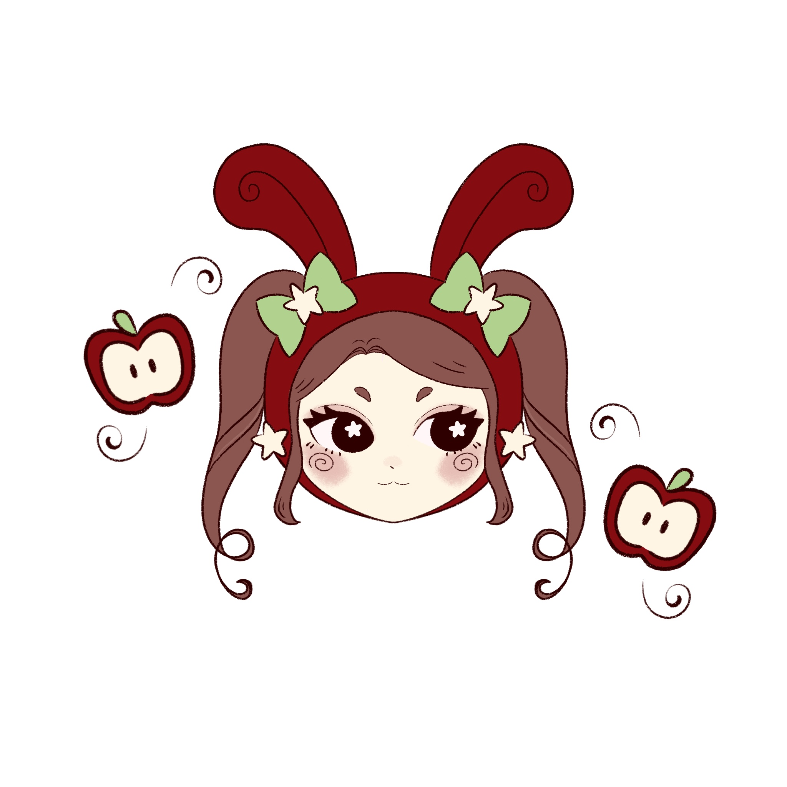
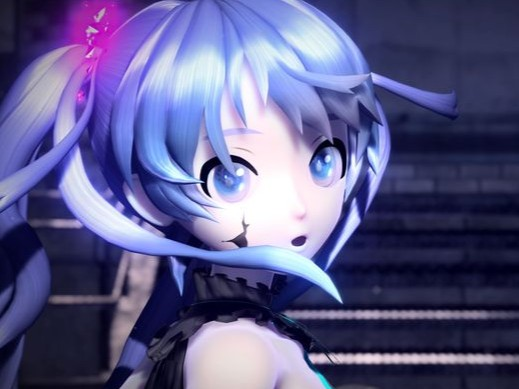

Mina hobbies
Rita i procreate:

Jag har ritat tjejen ovanför i en app som heter procreate.
Jag försöker rita lite varje dag men ibland har jag inte tid.
Just nu försöker jag hitta mitt egna drawingstyle och jag har tyckt om att använda swirls i mina ritningar.
Lyssna på musik:

Jag tycker om att lyssna på Vocaloid.
Vocaloid är egentligen en datorprogram för att producera låtar.
Röstbanken som jag lyssnar mest på är Hatsune Miku som är karaktären på bilden.
Vocaloid Musik
Tre av mina favorit låtar.
I tabellen kan man se namnet på låten, vem som sjunger låten,
vilket år det kom ut och hur många visningar den fick på Youtube.
| Namn | Röstbank | År | Visningar |
|---|---|---|---|
| World is Mine | Hatsune Miku | 2008 | 33M |
| Electric Angel | Kagamine Rin and Len | 2013 | 43M |
| Romeo and Cinderella | Hatsune Miku | 2009 | 51M |
wiki/Hatsune Miku